Turn
Add or subtract one step. Default ±10 seconds.
Choose a command, learn the dial gestures, or run your own Event Flow workflow.
.streamDeckPlugin file to install it.All SSN actions and profiles share one connection. Keep your session ID and password private.
For WebSocket mode, enable SSN's remote API control and select WebSocket in the plugin. Keep the default host io.socialstream.ninja, TLS on, send channel 1 and listen channel 2 unless you use a custom server.
Pasting a full overlay URL can also import its password and connection mode. Check those settings before testing.
| Action | Place it on | How it works |
|---|---|---|
| Setup | Key | Holds the shared connection settings. The key only shows connection status. |
| Preset Command | Key | Choose a command, fill in any required value, then press once. |
| Custom Command | Key | Send any API action with an optional target and value (JSON for objects, arrays and booleans). |
| Timer Dial | Stream Deck + dial | Adjust, start and pause SSN's shared stream timer. |
| Chat Review | Stream Deck + dial | Browse recent chat, pin a message, and feature pinned messages. |
No dials? Timer presets work on regular keys. Multi Actions don’t wait for delayed Event Flow workflows.
Use Refresh sources after changing sources in SSApp. If a saved source is unavailable, its value stays saved until you choose another. Use Edit ID or JSON for a manual source ID or advanced options.
The key preview shows the icon and title. Enter a short custom title to distinguish multiple sources; line breaks are supported.
Add or subtract one step. Default ±10 seconds.
Six steps per click. Default ±1 minute. Doesn’t start or pause.
Start or pause the timer.
Refresh the display. Doesn’t start or pause.
Reset to the starting duration and pause.
Example: start at 5:00. Turn right once → 5:10. Hold the dial down and turn right once → 6:10. Press/release → countdown starts. Press/release again → pause. Hold the screen → 5:00.
Set Seconds per turn in the inspector. All Timer Dials share one SSN timer; add the SSN timer overlay to OBS to show it.
Only messages received while Chat Review is visible are listed. Empty? Chat relay may be off, or nothing new has arrived.
intermission.After renaming, disabling or deleting the trigger, refresh and reselect it.
In the Value field:
{"trigger":"intermission","flowId":"YOUR_FLOW_ID","data":{"name":"Back in five minutes"}}Use {meta.workflow.data.name} in an action's text template. Omit flowId to run every enabled flow with that exact trigger name. Names are case-sensitive. Each press starts a run; add a Rate Limiter (THROTTLE) node if you want a cooldown. A delayed run can overlap a later press.
API clients use the same connection: {"action":"triggerWorkflow","value":{"trigger":"intermission"}}. getWorkflowTriggers lists enabled, saved triggers. Older hosts hide these presets until their capabilities advertise support.
The large symbol is the feature; the small badge is the operation.
The plugin only lists commands your SSApp or extension supports. Desktop app commands need SSApp.
No matching commands. Try another word or clear the search.
| Icon | Command | Value / default |
|---|---|---|
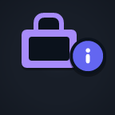 | Product StategetCommerceState | No value needed |
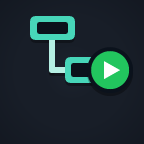 | Run WorkflowtriggerWorkflow | Trigger name or workflow JSON |
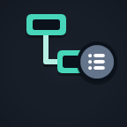 | List WorkflowsgetWorkflowTriggers | No value needed |
Open Giveawaystartgiveaway | Giveaway ID/config JSON{"giveawayId":"default"} | |
Close Giveawayclosegiveaway | Giveaway ID JSON{"giveawayId":"default"} | |
Draw Giveawaydrawgiveaway | Giveaway ID JSON{"giveawayId":"default"} | |
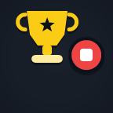 | Cancel & Refund Giveawaycancelgiveaway | Giveaway ID JSON{"giveawayId":"default"} |
New Giveaway Roundresetgiveaway | Giveaway ID JSON{"giveawayId":"default"} | |
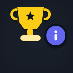 | Giveaway Stategetgiveawaystate | Giveaway ID JSON{"giveawayId":"default"} |
Show ProductcommerceShow | Saved product URL (optional) | |
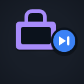 | Next ProductcommerceNext | Seconds (0 = until changed)0 |
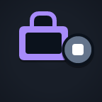 | Hide ProductscommerceHide | Seconds (0 = until changed)0 |
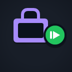 | Resume ProductscommerceResume | No value needed |
Next In QueuenextInQueue | No value needed | |
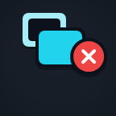 | Clear OverlayclearOverlay | No value needed |
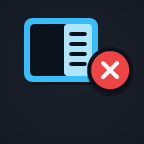 | Clear Dock MessagesclearDock | No value needed |
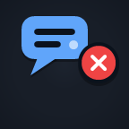 | Clear Messagesclear | No value needed |
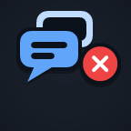 | Clear All MessagesclearAll | No value needed |
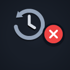 | Clear Saved HistoryclearHistory | Type confirmconfirm |
Start CreditscreditsStart | No value needed | |
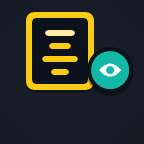 | Preview CreditscreditsPreview | No value needed |
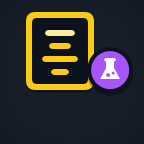 | Test CreditscreditsTest | No value needed |
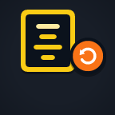 | Reset Collected CreditscreditsReset | No value needed |
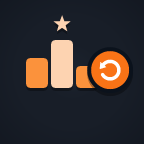 | Reset Leaderboardresetleaderboard | No value needed |
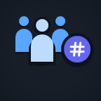 | Queue SizegetQueueSize | No value needed |
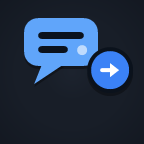 | Send ChatsendChat | MessageHello from Stream Deck |
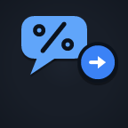 | Send Encoded ChatsendEncodedChat | Encoded messageHello%20from%20Stream%20Deck |
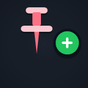 | Pin Dock Messagepin | Message ID or JSON message |
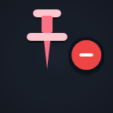 | Unpin Dock Messageunpin | Message ID |
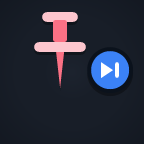 | Next Pinned MessagenextPinned | No value needed |
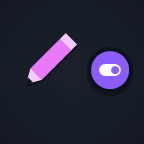 | Draw Modedrawmode | true, false, or toggletoggle |
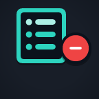 | Remove Waitlist Entryremovefromwaitlist | Entry number1 |
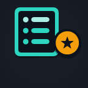 | Highlight Waitlist Entryhighlightwaitlist | Entry number1 |
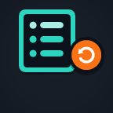 | Reset Waitlistresetwaitlist | No value needed |
Stop Waitlist Entriesstopentries | No value needed | |
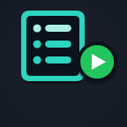 | Start Waitlist Entriesstartentries | No value needed |
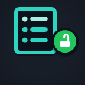 | Open Waitlist Entriesopenentries | No value needed |
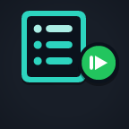 | Resume Waitlist Entriesresumeentries | No value needed |
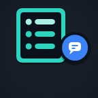 | Set Waitlist Messagewaitlistmessage | MessageType !join to enter! |
Set Waitlist Messagesetwaitlistmessage | MessageType !join to enter! | |
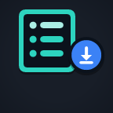 | Download Waitlistdownloadwaitlist | No value needed |
Select Winnerselectwinner | Winner count1 | |
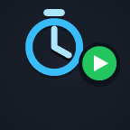 | Start Timerstarttimer | No value needed |
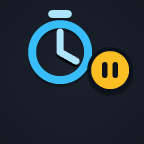 | Pause Timerpausetimer | No value needed |
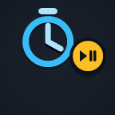 | Toggle Timertoggletimer | No value needed |
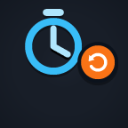 | Reset Timerresettimer | Preset value included{"confirm":true} |
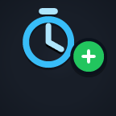 | Add Timer Timetimeradd | Seconds30 |
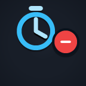 | Subtract Timer Timetimersubtract | Seconds30 |
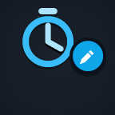 | Set Timersettimer | Timer JSON{"seconds":300} |
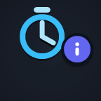 | Timer Stategettimerstate | No value needed |
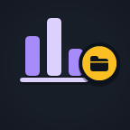 | Load Poll Presetloadpoll | {"pollId":"..."} |
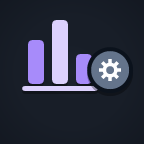 | Set Poll Settingssetpollsettings | Poll settings JSON |
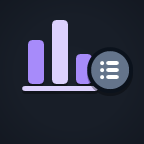 | Poll Presetsgetpollpresets | No value needed |
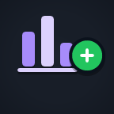 | Create Pollcreatepoll | Poll definition JSON |
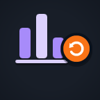 | Reset Pollresetpoll | No value needed |
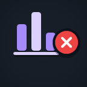 | Close Pollclosepoll | No value needed |
Start Mapstartmap | No value needed | |
Pause Mappausemap | No value needed | |
Reset Mapresetmap | No value needed | |
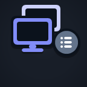 | Desktop App SourcesgetSourcesDesktop app | No value needed |
Desktop App SourcegetSourceDesktop app | Choose a source | |
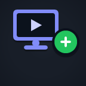 | Add SourceaddSourceDesktop app | Source JSON |
Update SourceupdateSourceDesktop app | {"sourceId":"...","updates":{...}} | |
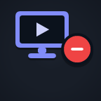 | Remove SourceremoveSourceDesktop app | {"sourceId":"...","confirm":true} |
Start SourcestartSourceDesktop app | Choose a source | |
Stop SourcestopSourceDesktop app | Choose a source | |
Restart SourcerestartSourceDesktop app | Choose a source | |
Start All SourcesstartAllSourcesDesktop app | Filter JSON{} | |
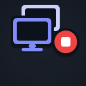 | Stop All SourcesstopAllSourcesDesktop app | Filter JSON{"confirm":true} |
Restart All SourcesrestartAllSourcesDesktop app | Filter JSON{"confirm":true} | |
Set Source MutesetSourceMuteDesktop app | Choose a source, then Mute or Unmute | |
Toggle Source MutetoggleSourceMuteDesktop app | Choose a source | |
Set Source VisibilitysetSourceVisibilityDesktop app | Choose a source, then Show or Hide | |
Toggle Source VisibilitytoggleSourceVisibilityDesktop app | Choose a source | |
Set Connection ModesetSourceConnectionModeDesktop app | {"sourceId":"...","mode":"websocket"} | |
Desktop App SettingsgetSettingsDesktop app | No value needed | |
Update Desktop App SettingsupdateSettingsDesktop app | Settings JSON |
HTTP fallback is optional in WebSocket mode. It can help when the socket connects without relaying responses. Do not change default channels unless your receiver uses the same custom routing.
Report a problem with the action, expected result, observed result and sanitized diagnostics. Do not share session IDs, passwords or private source URLs.